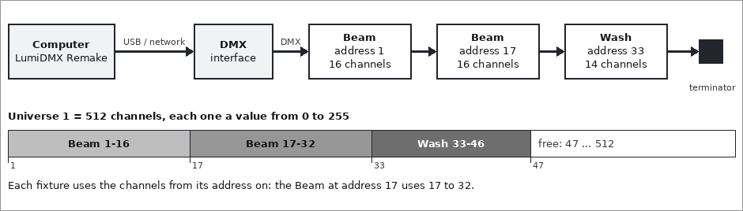

For: FullPlayer
DMX (DMX512) is the signal that tells lights what to do. LumiDMX Remake sends it through a DMX interface; the fixtures are connected one after the other on the same cable.

One DMX line: three fixtures, each with its own address, and the channels they use.
One DMX line carries 512 channels; this set of 512 is called a universe. Each channel holds a value from 0 to 255, sent again and again, many times a second. When a project needs more than 512 channels, it uses more universes (universe 1, universe 2 ...), each on its own line or on the network.
A fixture listens to a few channels in a row, starting at its DMX address (the start address), which is set on the fixture itself (on its display or with its DIP switches). A beam with 16 channels at address 1 uses the channels 1 to 16; the next fixture goes at address 17. Two fixtures with the same address and the same channels do exactly the same thing; this is sometimes wanted (two identical beams that must move together).
Each channel of a fixture has one job: Pan, Tilt, Dimmer, Shutter (strobe), Colour wheel, Gobo wheel, Prism, Focus, Zoom, Frost, Red, Green, Blue ...
The manual of the fixture lists all this in its DMX table.
LumiDMX Remake knows a fixture through its profile: a .lfi2 file with the name of the
fixture, its channels, their presets and their pictures. Every fixture of a project needs its profile. The
LumiDMX Fixture Editor makes and corrects profiles; it can also make one from the
DMX table of the manual.
The patch is the list of the fixtures of a project: which profile, which universe, which address. It is made in Setup & Patch and saved in the project. The addresses in the patch must be the ones set on the fixtures.
The DMX leaves the computer through an interface, chosen and connected in Setup & Patch > DMX Hardware:
The program can also receive DMX (DMX-IN, from Art-Net or from a Soundlight interface), for example from a lighting desk. See DMX Hardware.
Tip: the last fixture of a DMX cable should have a terminator in its DMX output (a plug with a 120 ohm resistor). Without it, long lines can flicker.